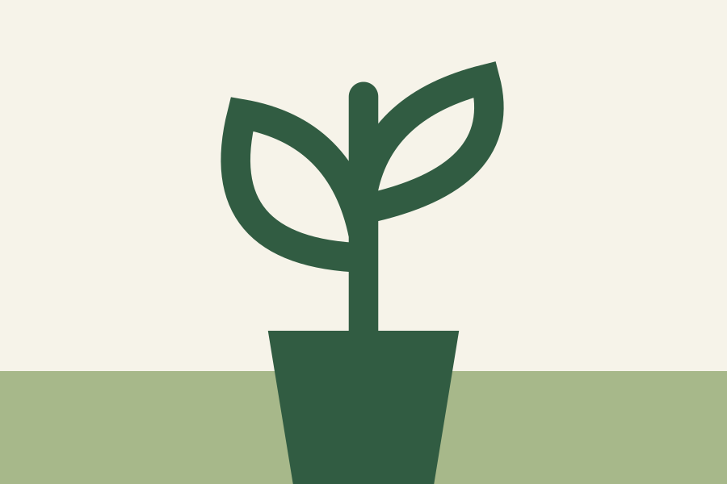
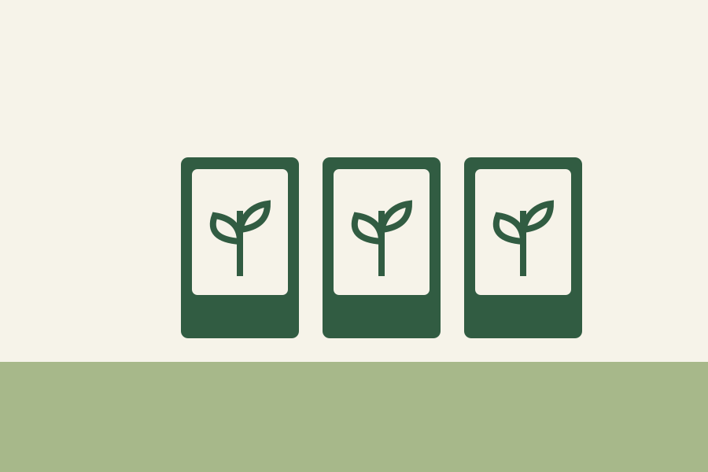

Indoor Houseplants
Easy-care tropical houseplants suitable for low to bright indirect light conditions.
Take a look at some of our popular plant and gardening options.

Easy-care tropical houseplants suitable for low to bright indirect light conditions.

Heirloom seeds sourced from local organic farms for healthy home harvests.
Listen to our quick tips for seasonal planting and soil preparation:
Download the audio guide (MP3)